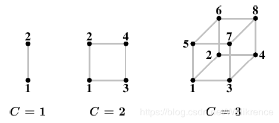
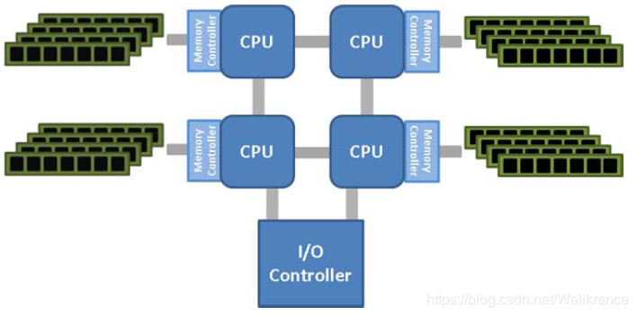

NUMA(非一致性内存架构)（转）
原文地址 — —
一、基本概念
非一致性内存架构(Non-uniform Memory Architecture)是为了解决传统的对称多处理(Symmetric Multi-processor)系统中的可扩展性问题而诞生的。在对称多处理系统中，处理器共享北桥中的内存控制器来达到共同访问外部内存和IO的目的，也就是说所有的处理器对内存和I/O的访问方式和开销都是相同的。在这种系统中，随着更多的处理器被添加到SMP系统中，总线的竞争将会越来越大，系统的性能也必将随之大打折扣。SMP系统的示意图如下：  NUMA系统拥有多条内存总线，于是将几个处理器通过内存总线与一块内存相连构成一个组，这样整个庞大的系统就可以被分为若干个组，这个组的概念在NUMA系统中被称为节点(node)。处于该节点中的内存被称为本地内存(local memory),处于其他节点中的内存对于该组而言被称为外部内存(foreign memory)。而节点又可以分为三类，即本地节点(local node)，邻居节点(neighbour node)和远端节点(remote node).
本地节点： 对于某个节点中的所有CPU，此节点称为本地节点；
邻居节点： 与本地节点相邻的节点称为邻居节点；
远端节点： 非本地节点或邻居节点的节点，称为远端节点。
超立方体可以作为一种有效的拓扑来描述NUMA系统，它将系统中的节点数限制在2^C内，C是每个节点拥有的邻居节点数，如下图所示 以C=3为例，则对于节点1而言，2,3,5则为邻居节点，4,6,7,8为远端节点，显然访问开销的关系为 本地节点<邻居节点<远端节点。
AMD Hyper-Transport
古老的SMP系统只拥有一个位于北桥中的内存控制器，而如今更先进的做法是将内存控制器整合到CPU中去，这样每个CPU都拥有自己的内存控制器，不会相互之间产生竞争。最先采用这种做法的一批处理器就是AMD在2003年推出的AMD Opteron系列处理器，其结构如下图所示：
 可以看到，每个CPU中都整合了一个内存控制器，并且CPU之间采用了一种Hyper-Transport的技术建立连接，这种连接可以使得CPU通过其他CPU来访问外部内存，当然访问开销要比访问本地内存更大。
三、操作系统的支持
为了支持NUMA架构，OS的设计必须将内存分布的特点考虑进去。举一个简单的例子，假如一个进程运行在一个给定的处理器中，那么为这个进程所分配的物理内存就应该是该处理器的本地内存，而不是外部内存。为了避免情况变得更糟，OS还要注意避免将一个进程从一个节点给迁移到另一个节点。在一个普通的多处理系统中，OS就应该已经尝试不去在处理器之间迁移进程，因为这意味着一个处理器的cache中的相关内容都将被丢失。如果在某种情况下必须进行迁移，那么OS可以随意选择一个空闲的处理器。但是在NUMA系统中，可选择的新处理器将要受到一些限制，最重要的一点就是新处理器访问内存的开销不能比先前的处理器大，也就是说应该尽可能选择本地节点中的处理器。当找不到符合条件的处理器，OS才能选择其他的处理器。在这种较糟的情况下有两种选择，一种是如果这个进程只是暂时性的被迁移出去，那么可以再将其迁移回更加合适的处理器;如果不是暂时性的，那么可以将该进程的内存拷贝到新处理器的内存中，这样就可以通过访问拷贝的内存来消除访问外部内存的开销，显然这是一种空间换时间的做法。